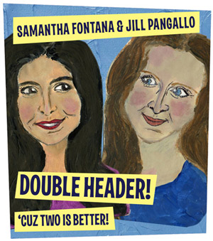

past performance |
|||
| 
Wild Project presents Double Header: 'cuz Two is Better! Samantha Fontana & Jill Pangallo showtimes & tickets:January 6 @ 8:30PM One night only! Downtown performers/stand-up comedians Samantha Fontana and Jill Pangallo present: "Double Header, 'cuz Two is Better." Two gals, one night… of stand up comedy! Two half-hour sets, back to back! Get yourself to The Wild Project on January 6th for some inspired stand-up without a darn drink minimum! SAMANTHA FONTANA is a Greek-Italian-Jew comedian, writer, and actor born and raised in the East Village. She received her BFA in Acting from Brooklyn College. She spelled Juilliard wrong 18 times on her Jewliard application. Samantha performs all over NYC: Joe's Pub, The Mockingbird, Stand Up NY, Sid Gold's, and more. She hosts the Monday Salon at Double Wide on the second Monday of every month at 7pm featuring NYC's best performers. She also performs monthly with S.U.C.K. (Stand Up Comedy Klub... yes that's Klub with a K) every month at The Mockingbird with guests you won't want to miss. She is a featured comedian in the Funny or Die Community as well as the co-founder, writer, and comedian in Samantha Fontana and S&M, both channels available on Funny or Die. Shorts she has produced include Too Late for Lattes, Methrocard, and The Interview, among others. Check out Samantha in Your Main Thing, available on Vimeo. JILL PANGALLO is a multidisciplinary artist and freelance creative consultant. She is best known for her funny and disturbing multimedia works that deal with identity and mass culture. In addition to performing solo, exhibiting internationally, and curating ensemble events, Jill works with some of New York City’s most talented alternative performers to develop their own solo works. She performs monthly with her comedy collective, S.U.C.K., and recently completed a residency with SKOTE (with Alex P. White) at Pioneer Works. Her latest theater project, Jane Johnson for the Home Shopper (in collaboration with performer Shane O’Neill) had it's NYC premiere at the Wild Project in the Fall of 2017. jillpangallo.com |
upcoming performances |
|||
 |
|||
| EVQ Film Festival 2018 August 20-25 |
|||
performance archives |
|||
| 2018 | 2017 | 2016 | 2015 |
| 2014 | 2013 | 2012 | 2011 |
| 2010 | 2009 | 2008 | 2007 |